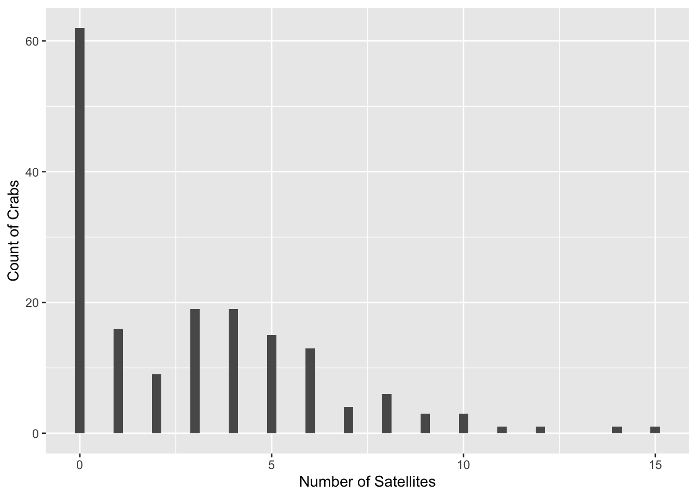
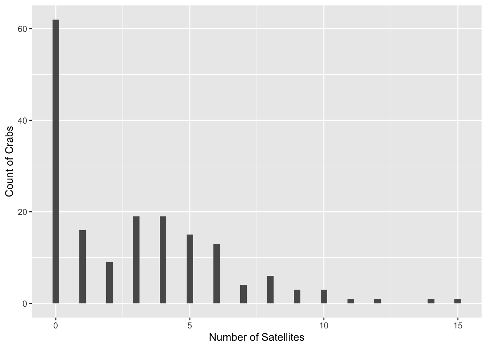
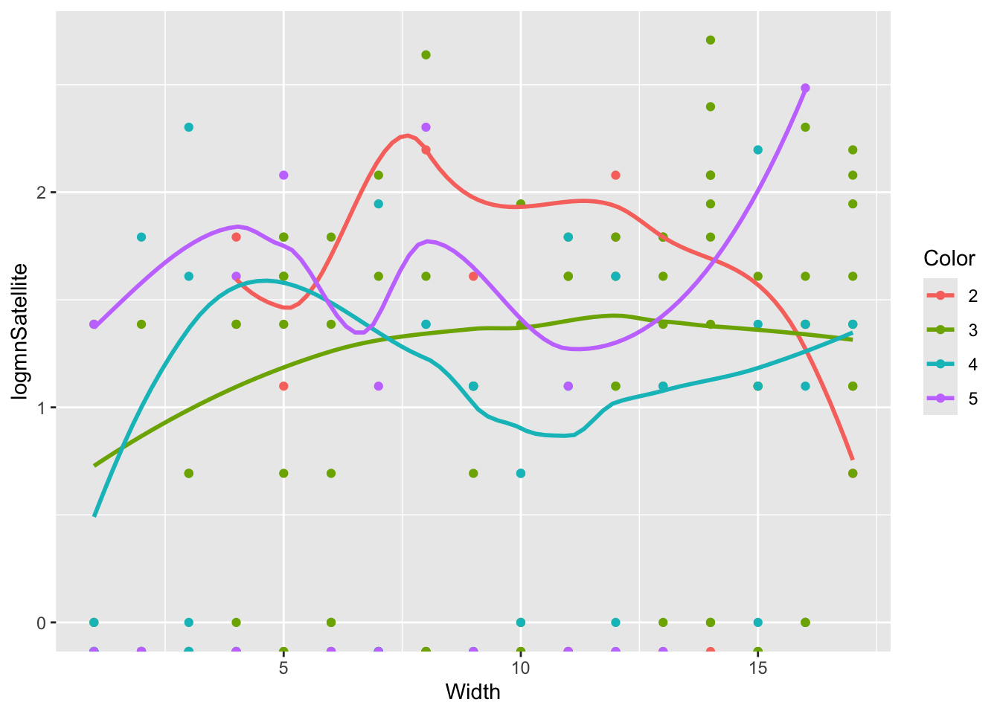
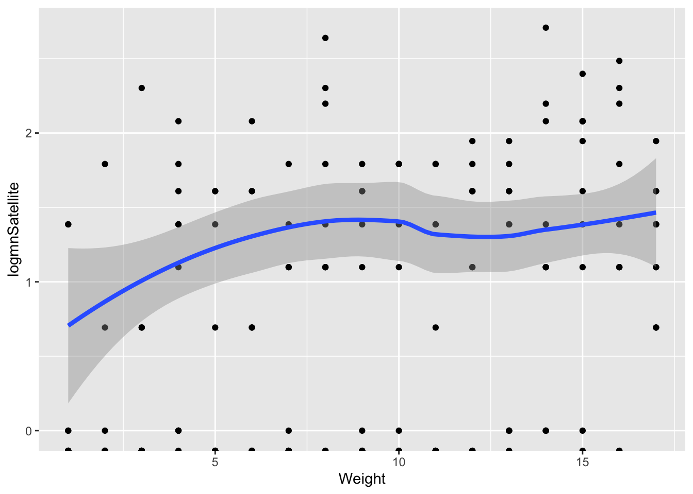
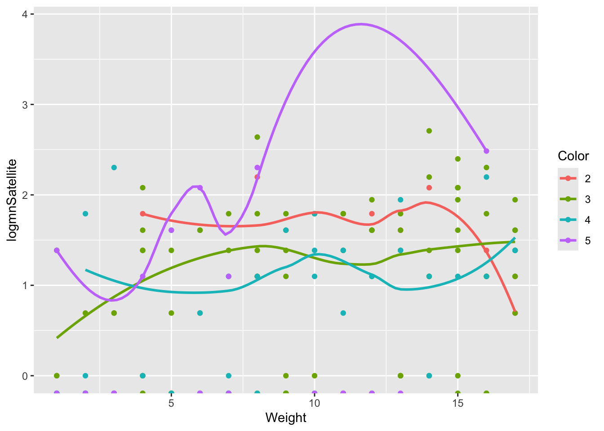
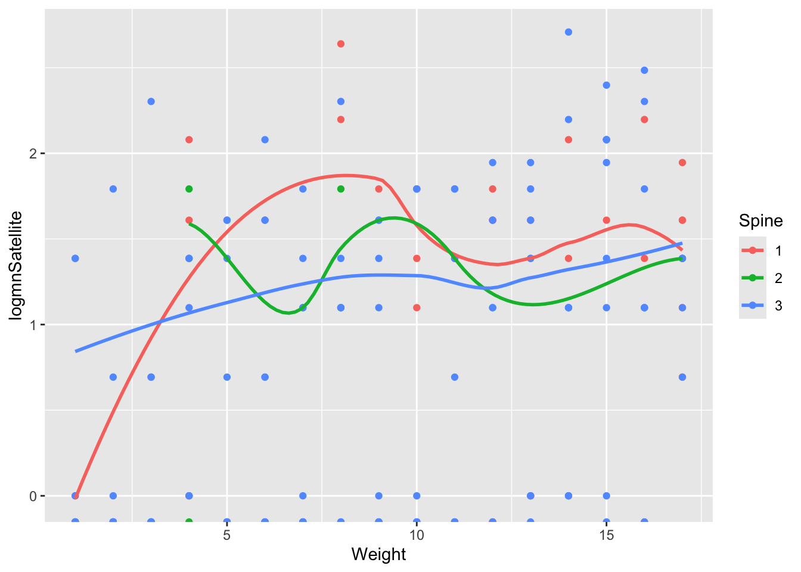
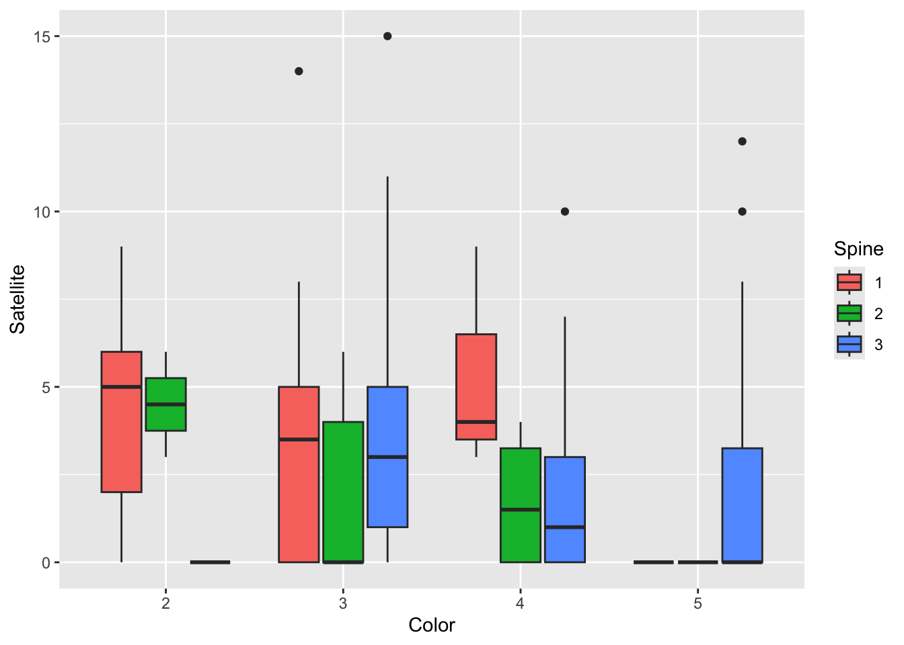
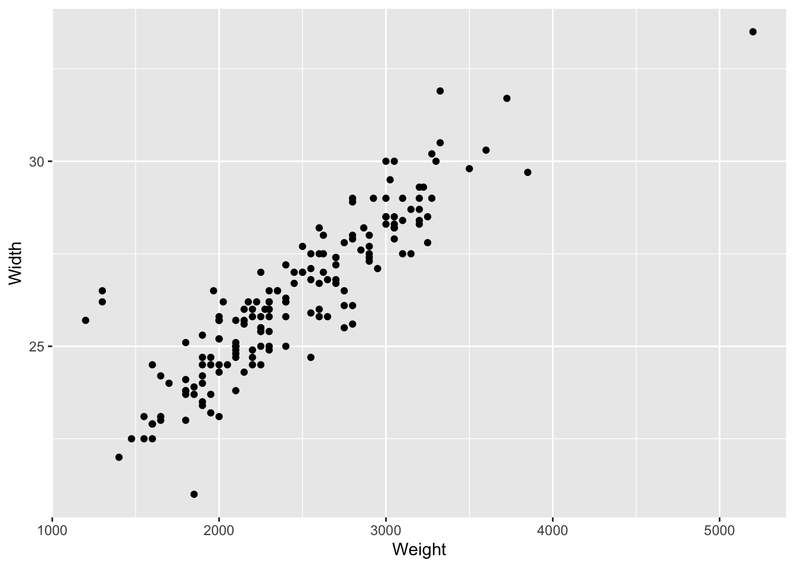
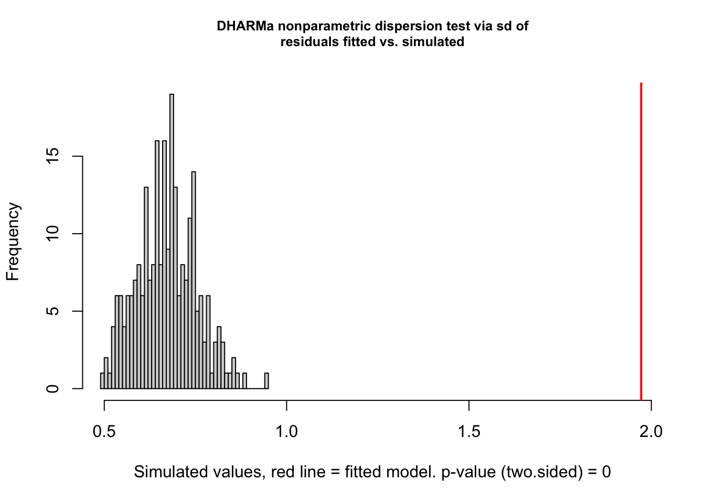

ggplot(crab, aes(x = Satellite)) +
geom_histogram(binwidth = .25) +
xlab("Number of Satellites") +
ylab("Count of Crabs")
mean(crab$Satellite)[1] 2.919075var(crab$Satellite)[1] 9.912018The goal of this project is to conduct exploratory analysis on the data set to determine useful predictors for a poisson regression model. Additionally, I will examine the Poisson model fit and any potential impacts caused by overdispersion.
Data are available from a study on horseshoe crabs. Female horseshoe crabs often have male crabs attached to a female’s nest known as satellites. One objective of the study was to determine which characteristics of the female were associated with the number of satellites. Of particular interest is the relationship between the width of the female carapace and satellites.
The data can be found in crab.csv. It includes: - NumStat = number of satellites - Width = carapace width (cm) - Weight = weight (kg) - Spine = spine condition (1 = both good, 2 = one worn or broken, 3 = both worn or broken) - Color = (2 = light medium, 3 = medium, 4 = dark medium, 5 = dark)
ggplot(crab, aes(x = Satellite)) +
geom_histogram(binwidth = .25) +
xlab("Number of Satellites") +
ylab("Count of Crabs")
mean(crab$Satellite)[1] 2.919075var(crab$Satellite)[1] 9.912018It seems that the mode count of satellites is zero. The variance of our response of carapace satellites is significantly higher than the mean which indicates we will likely have an issue with the mean = variance assumption.
sumStats <- crab |>
group_by(Width = ntile(Width, 15)) |>
summarise(n = n(),
mnSatellite = mean(Satellite),
varSatellite = var(Satellite),
logmnSatellite = log(Satellite)
)Warning: Returning more (or less) than 1 row per `summarise()` group was deprecated in
dplyr 1.1.0.
ℹ Please use `reframe()` instead.
ℹ When switching from `summarise()` to `reframe()`, remember that `reframe()`
always returns an ungrouped data frame and adjust accordingly.`summarise()` has grouped output by 'Width'. You can override using the
`.groups` argument.ggplot(sumStats, aes(x = Width, y = logmnSatellite)) +
geom_point() +
geom_smooth(method = "loess", size = 1.5) +
xlab("Width of the crab") +
ylab("Log of the empirical mean number of satellites") Warning: Using `size` aesthetic for lines was deprecated in ggplot2 3.4.0.
ℹ Please use `linewidth` instead.`geom_smooth()` using formula = 'y ~ x'Warning: Removed 62 rows containing non-finite outside the scale range
(`stat_smooth()`).
There does not appear to be much of a relationship between width of crab and the log mean number of satellites. The line is fairly flat but appears to be linear.
sumStats <- crab |>
group_by(Width = ntile(Width, 17), Color) |>
summarise(n = n(),
mnSatellite = mean(Satellite),
varSatellite = var(Satellite),
logmnSatellite = log(Satellite)
)Warning: Returning more (or less) than 1 row per `summarise()` group was deprecated in
dplyr 1.1.0.
ℹ Please use `reframe()` instead.
ℹ When switching from `summarise()` to `reframe()`, remember that `reframe()`
always returns an ungrouped data frame and adjust accordingly.`summarise()` has grouped output by 'Width', 'Color'. You can override using
the `.groups` argument.ggplot(sumStats, aes(x = Width, y = logmnSatellite, color = Color)) +
geom_point() +
geom_smooth(method = "loess", se = FALSE) `geom_smooth()` using formula = 'y ~ x'Warning: Removed 62 rows containing non-finite outside the scale range
(`stat_smooth()`).
There seems to be a significant difference in the trends among the various colors. The log mean number of satellites seems to be different for different colors as the weight increases. None of the colors share a consistent trend throughout the data.
sumStats <- crab |>
group_by(Width = ntile(Width, 15), Spine) |>
summarise(n = n(),
mnSatellite = mean(Satellite),
varSatellite = var(Satellite),
logmnSatellite = log(Satellite)
)Warning: Returning more (or less) than 1 row per `summarise()` group was deprecated in
dplyr 1.1.0.
ℹ Please use `reframe()` instead.
ℹ When switching from `summarise()` to `reframe()`, remember that `reframe()`
always returns an ungrouped data frame and adjust accordingly.`summarise()` has grouped output by 'Width', 'Spine'. You can override using
the `.groups` argument.ggplot(sumStats, aes(x = Width, y = logmnSatellite, color = Spine)) +
geom_point() +
geom_smooth(method = "loess", se = FALSE) `geom_smooth()` using formula = 'y ~ x'Warning: Removed 62 rows containing non-finite outside the scale range
(`stat_smooth()`).Warning in simpleLoess(y, x, w, span, degree = degree, parametric = parametric,
: pseudoinverse used at 5Warning in simpleLoess(y, x, w, span, degree = degree, parametric = parametric,
: neighborhood radius 2Warning in simpleLoess(y, x, w, span, degree = degree, parametric = parametric,
: reciprocal condition number 3.6117e-17
It seems that the trends are very different when grouped by spine conditions. This indicates that there is likely an interaction between the width and the spine condition, in relation the the log mean number of satellites. I would infer that both spine condition and color play roles in the number of satellites.
sumStats <- crab |>
group_by(Weight = ntile(Weight, 17)) |>
summarise(n = n(),
mnSatellite = mean(Satellite),
varSatellite = var(Satellite),
logmnSatellite = log(Satellite)
)Warning: Returning more (or less) than 1 row per `summarise()` group was deprecated in
dplyr 1.1.0.
ℹ Please use `reframe()` instead.
ℹ When switching from `summarise()` to `reframe()`, remember that `reframe()`
always returns an ungrouped data frame and adjust accordingly.`summarise()` has grouped output by 'Weight'. You can override using the
`.groups` argument.ggplot(sumStats, aes(x = Weight, y = logmnSatellite)) +
geom_point() +
geom_smooth(method = "loess", size = 1.5) `geom_smooth()` using formula = 'y ~ x'Warning: Removed 62 rows containing non-finite outside the scale range
(`stat_smooth()`).
It seems that weight has a relatively flat and linear relationship with log mean number of satellites. It seems to follow a very similar trend to width, which leads me to believe that width and weight are highly correlated.
sumStats <- crab |>
group_by(Weight = ntile(Weight, 17), Color) |>
summarise(n = n(),
mnSatellite = mean(Satellite),
varSatellite = var(Satellite),
logmnSatellite = log(Satellite)
)Warning: Returning more (or less) than 1 row per `summarise()` group was deprecated in
dplyr 1.1.0.
ℹ Please use `reframe()` instead.
ℹ When switching from `summarise()` to `reframe()`, remember that `reframe()`
always returns an ungrouped data frame and adjust accordingly.`summarise()` has grouped output by 'Weight', 'Color'. You can override using
the `.groups` argument.ggplot(sumStats, aes(x = Weight, y = logmnSatellite, color = Color)) +
geom_point() +
geom_smooth(method = "loess", se = FALSE) `geom_smooth()` using formula = 'y ~ x'Warning: Removed 62 rows containing non-finite outside the scale range
(`stat_smooth()`).
It seems that the intercepts are different for colors 1-4, but they share fairly similar trends. For dark color (5), there is a much more distinct trend that does not seem to be similar to the others. I think color should be used in the model based on our findings.
sumStats <- crab |>
group_by(Weight = ntile(Weight, 17), Spine) |>
summarise(n = n(),
mnSatellite = mean(Satellite),
varSatellite = var(Satellite),
logmnSatellite = log(Satellite)
)Warning: Returning more (or less) than 1 row per `summarise()` group was deprecated in
dplyr 1.1.0.
ℹ Please use `reframe()` instead.
ℹ When switching from `summarise()` to `reframe()`, remember that `reframe()`
always returns an ungrouped data frame and adjust accordingly.`summarise()` has grouped output by 'Weight', 'Spine'. You can override using
the `.groups` argument.ggplot(sumStats, aes(x = Weight, y = logmnSatellite, color = Spine)) +
geom_point() +
geom_smooth(method = "loess", se = FALSE) `geom_smooth()` using formula = 'y ~ x'Warning: Removed 62 rows containing non-finite outside the scale range
(`stat_smooth()`).Warning in simpleLoess(y, x, w, span, degree = degree, parametric = parametric,
: pseudoinverse used at 3.935Warning in simpleLoess(y, x, w, span, degree = degree, parametric = parametric,
: neighborhood radius 4.065Warning in simpleLoess(y, x, w, span, degree = degree, parametric = parametric,
: reciprocal condition number 1.1285e-16Warning in simpleLoess(y, x, w, span, degree = degree, parametric = parametric,
: There are other near singularities as well. 9
The trends appear to deviate from each other yet not a durastically as seen in the previous plots. There is likely a chance that spine will play a roll in predicted satellites, yet it is harder to see differences when we are examining the relationship by weight.
ggplot(crab, aes(x=Color, y=Satellite, fill=Spine)) +
geom_boxplot() 
It seems that there is no consistent pattern by color, as the number of satellites for each color varies by spine condition. This could suggest an interaction between the variables, yet we also have NA values for some spine conditions which could be problematic.
ggplot(data = crab,
aes(x = Weight, y = Width))+
geom_point()
cor(crab$Weight, crab$Width)[1] 0.8868715It seems that Width and Weight have a positive linear relationship. Due to the high correlation between the two variables, I would not include weight in the model. Especially because we are specifically interested in the relationship between between the width of the female carapace and satellites.
mod1 = glm(Satellite ~ Width , family= "poisson" , data=crab)
summary(mod1)
Call:
glm(formula = Satellite ~ Width, family = "poisson", data = crab)
Coefficients:
Estimate Std. Error z value Pr(>|z|)
(Intercept) -3.30476 0.54224 -6.095 1.1e-09 ***
Width 0.16405 0.01997 8.216 < 2e-16 ***
---
Signif. codes: 0 '***' 0.001 '**' 0.01 '*' 0.05 '.' 0.1 ' ' 1
(Dispersion parameter for poisson family taken to be 1)
Null deviance: 632.79 on 172 degrees of freedom
Residual deviance: 567.88 on 171 degrees of freedom
AIC: 927.18
Number of Fisher Scoring iterations: 6mod2 = glm(Satellite ~ Width + Color, family= "poisson" , data=crab)
summary(mod2)
Call:
glm(formula = Satellite ~ Width + Color, family = "poisson",
data = crab)
Coefficients:
Estimate Std. Error z value Pr(>|z|)
(Intercept) -2.65004 0.58802 -4.507 6.58e-06 ***
Width 0.14934 0.02084 7.166 7.73e-13 ***
Color3 -0.19969 0.15364 -1.300 0.1937
Color4 -0.43636 0.17636 -2.474 0.0133 *
Color5 -0.44736 0.20912 -2.139 0.0324 *
---
Signif. codes: 0 '***' 0.001 '**' 0.01 '*' 0.05 '.' 0.1 ' ' 1
(Dispersion parameter for poisson family taken to be 1)
Null deviance: 632.79 on 172 degrees of freedom
Residual deviance: 559.34 on 168 degrees of freedom
AIC: 924.64
Number of Fisher Scoring iterations: 6Nested Likelihood Ratio Test X^2 = 567.88-559.34 = 8.54 df = 3
pchisq(8.54, df = 3, lower.tail = FALSE)[1] 0.03607530.036 Evidence that color improves the model.
mod3 = glm(Satellite ~ Width + Color + Spine , family= "poisson" , data=crab)
summary(mod3)
Call:
glm(formula = Satellite ~ Width + Color + Spine, family = "poisson",
data = crab)
Coefficients:
Estimate Std. Error z value Pr(>|z|)
(Intercept) -2.54385 0.62426 -4.075 4.60e-05 ***
Width 0.14596 0.02189 6.669 2.58e-11 ***
Color3 -0.22158 0.16789 -1.320 0.1869
Color4 -0.46036 0.19554 -2.354 0.0186 *
Color5 -0.48544 0.22824 -2.127 0.0334 *
Spine2 -0.13879 0.21269 -0.653 0.5141
Spine3 0.02363 0.11729 0.201 0.8403
---
Signif. codes: 0 '***' 0.001 '**' 0.01 '*' 0.05 '.' 0.1 ' ' 1
(Dispersion parameter for poisson family taken to be 1)
Null deviance: 632.79 on 172 degrees of freedom
Residual deviance: 558.63 on 166 degrees of freedom
AIC: 927.93
Number of Fisher Scoring iterations: 6Nested Likelihood ratio test against mod1 X^2 = 567.88-558.63 = 9.25 df = 5
pchisq(9.25, 5, lower.tail = FALSE)[1] 0.09949846With a p-value of 0.099, this model is not better than one that just uses width.
Nested Likelihood ratio test against mod2 X^2 = 559.34-558.63 = 0.71 df = 2
pchisq(0.71, 2, lower.tail = FALSE)[1] 0.7011734With a p-value of 0.71, there is no evidence that adding the spine term improves the model.
# FINAL MODEL
mod4 = glm(Satellite ~ Color + Width + Width:Color, family= "poisson" , data=crab)
summary(mod4)
Call:
glm(formula = Satellite ~ Color + Width + Width:Color, family = "poisson",
data = crab)
Coefficients:
Estimate Std. Error z value Pr(>|z|)
(Intercept) 3.57144 2.46299 1.450 0.14705
Color3 -6.13346 2.55488 -2.401 0.01636 *
Color4 -8.51524 2.83682 -3.002 0.00268 **
Color5 -10.54353 3.31180 -3.184 0.00145 **
Width -0.08057 0.09187 -0.877 0.38046
Color3:Width 0.21942 0.09513 2.306 0.02108 *
Color4:Width 0.30017 0.10598 2.832 0.00462 **
Color5:Width 0.37883 0.12457 3.041 0.00236 **
---
Signif. codes: 0 '***' 0.001 '**' 0.01 '*' 0.05 '.' 0.1 ' ' 1
(Dispersion parameter for poisson family taken to be 1)
Null deviance: 632.79 on 172 degrees of freedom
Residual deviance: 547.57 on 165 degrees of freedom
AIC: 918.86
Number of Fisher Scoring iterations: 6AIC(mod4)[1] 918.8643Nested Likelihood ratio test against mod2 X^2 = 559.34-547.57 = 11.77 df = 3
pchisq(11.77, df = 3, lower.tail = FALSE)[1] 0.008214043With a p-value of 0.008, there is strong evidence that the interaction term with color improves the model.
567.88-547.57 = 20.31 df = 6
pchisq(20.31, 6, lower.tail = FALSE)[1] 0.002438512With a p-value of 0.002, there is clear evidence that this model with the color interaction term is better than just using width.
summary(mod4)
Call:
glm(formula = Satellite ~ Color + Width + Width:Color, family = "poisson",
data = crab)
Coefficients:
Estimate Std. Error z value Pr(>|z|)
(Intercept) 3.57144 2.46299 1.450 0.14705
Color3 -6.13346 2.55488 -2.401 0.01636 *
Color4 -8.51524 2.83682 -3.002 0.00268 **
Color5 -10.54353 3.31180 -3.184 0.00145 **
Width -0.08057 0.09187 -0.877 0.38046
Color3:Width 0.21942 0.09513 2.306 0.02108 *
Color4:Width 0.30017 0.10598 2.832 0.00462 **
Color5:Width 0.37883 0.12457 3.041 0.00236 **
---
Signif. codes: 0 '***' 0.001 '**' 0.01 '*' 0.05 '.' 0.1 ' ' 1
(Dispersion parameter for poisson family taken to be 1)
Null deviance: 632.79 on 172 degrees of freedom
Residual deviance: 547.57 on 165 degrees of freedom
AIC: 918.86
Number of Fisher Scoring iterations: 6t.s. = 632.79-547.57 = 85.22 df = 7
pchisq(85.22, 7, lower.tail = FALSE)[1] 1.181768e-15There is clear evidence that the model is useful(X^2 = 85.22, df = 7, p-value = 0).
exp(-0.08057)-1 [1] -0.07740968A one centimeter increase in carapace width is associated with a 7.7% increase in the mean number of satellites. The carapace width term in the model is not significant, however, it is necessary for the model. Though width itself will not significantly impact the predicted mean number of satellites, the interaction terms play an important role in adjusting for color.
pchisq(547.57, 165, lower.tail = FALSE)[1] 1.508815e-42There is clear evidence that the model has significant lack of fit (X^2 = 547.57, p-value = 0).
DHARMa::testDispersion(mod4)
DHARMa nonparametric dispersion test via sd of residuals fitted vs.
simulated
data: simulationOutput
dispersion = 2.9366, p-value < 2.2e-16
alternative hypothesis: two.sidedmod5 <- glm.nb(Satellite ~ Color + Width + Width:Color, data = crab)
summary(mod5)
Call:
glm.nb(formula = Satellite ~ Color + Width + Width:Color, data = crab,
init.theta = 0.9575041922, link = log)
Coefficients:
Estimate Std. Error z value Pr(>|z|)
(Intercept) 3.78848 5.55556 0.682 0.495
Color3 -7.03202 5.75422 -1.222 0.222
Color4 -9.20707 6.12183 -1.504 0.133
Color5 -9.35229 6.78019 -1.379 0.168
Width -0.08865 0.20600 -0.430 0.667
Color3:Width 0.25270 0.21337 1.184 0.236
Color4:Width 0.32642 0.22835 1.429 0.153
Color5:Width 0.33242 0.25582 1.299 0.194
(Dispersion parameter for Negative Binomial(0.9575) family taken to be 1)
Null deviance: 219.74 on 172 degrees of freedom
Residual deviance: 196.92 on 165 degrees of freedom
AIC: 764.52
Number of Fisher Scoring iterations: 1
Theta: 0.958
Std. Err.: 0.175
2 x log-likelihood: -746.518 There certainly was a significant problem with overdispersion in the model, as indicated by both the lack of fit test and the DHARMa package ‘testDispersion’ method. I used a negative binomial model to adjust for this overdispersion, which appeared to work effectively in that regard. While the adjustment reduced the overdispersion, the significance of all predictors dropped substantially. Despite that, there is still evidence that the model is useful (X^2 = 22.82, p-value = 0.0018).
Overall Model Utility
ts <- 219.74 - 196.92
df <- 7
pchisq(ts, df, lower.tail = FALSE)[1] 0.001832075